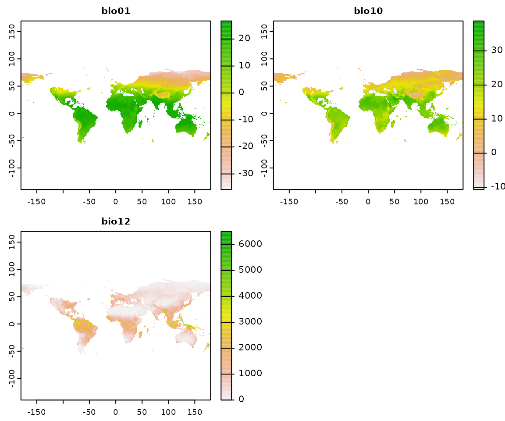
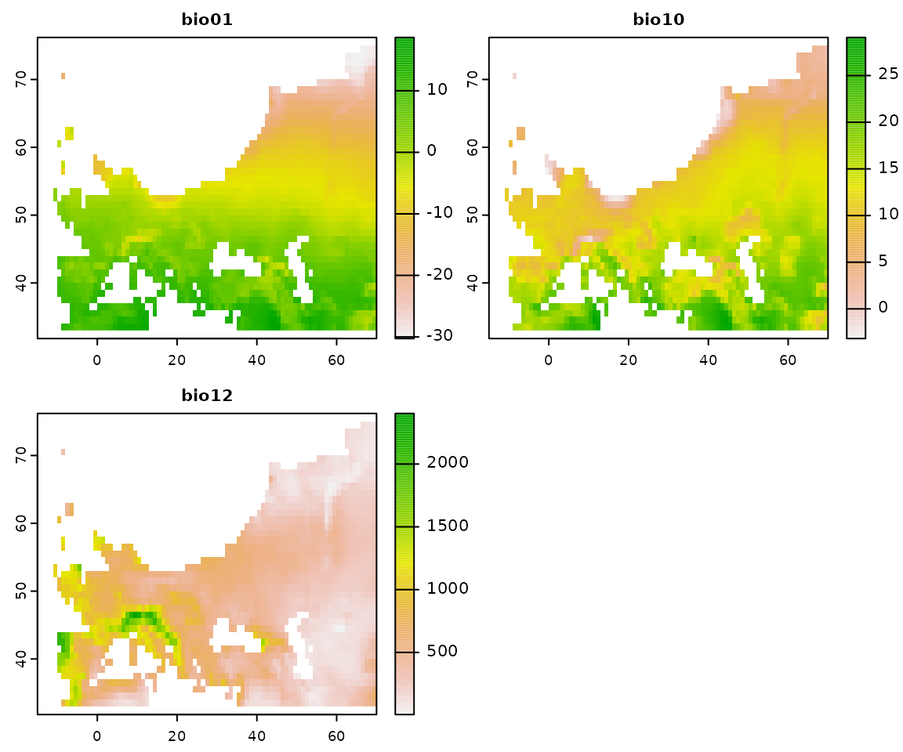
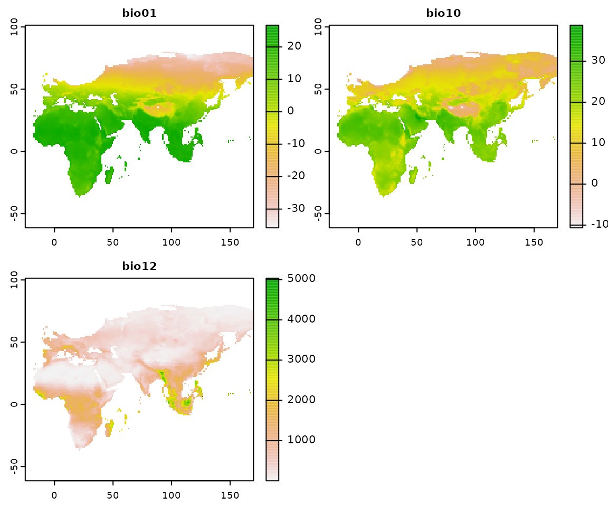
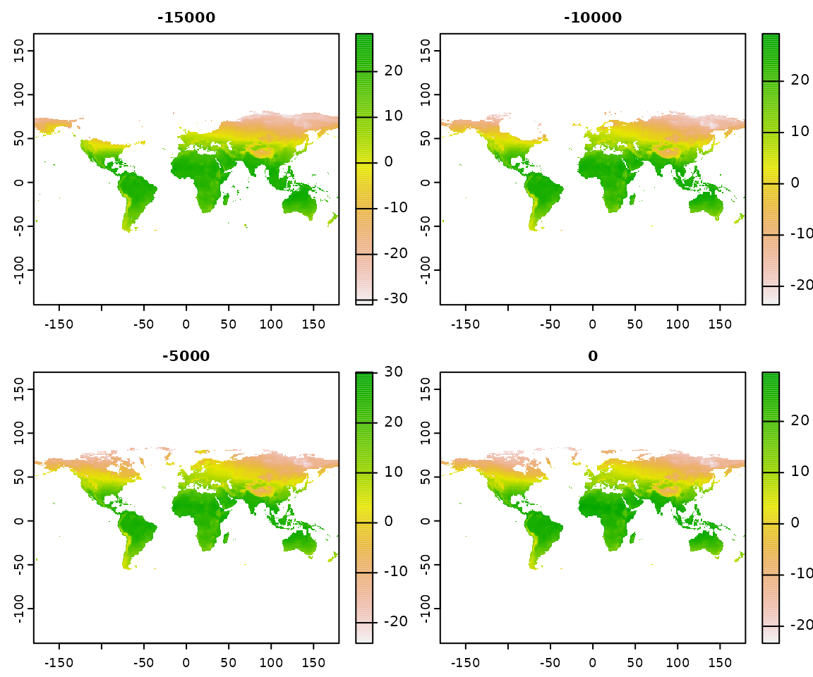
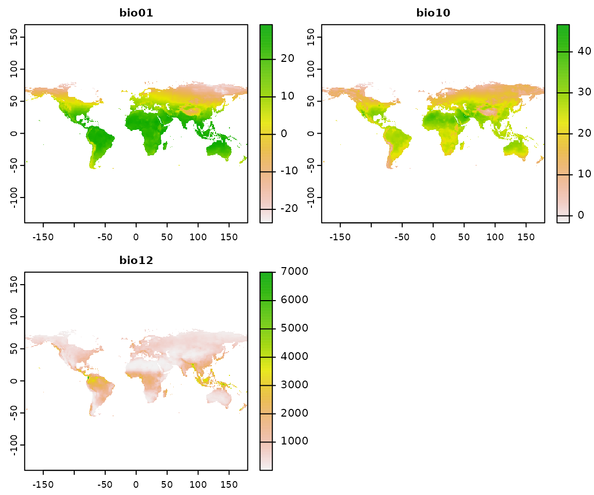
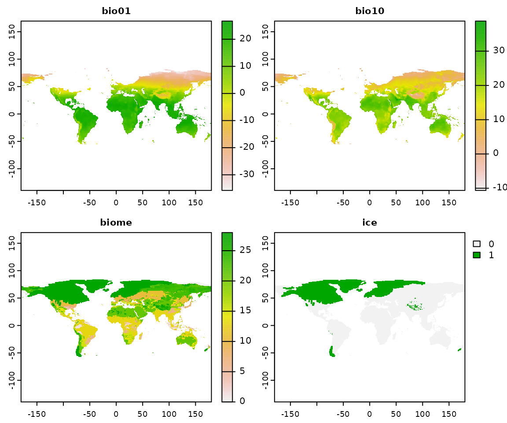
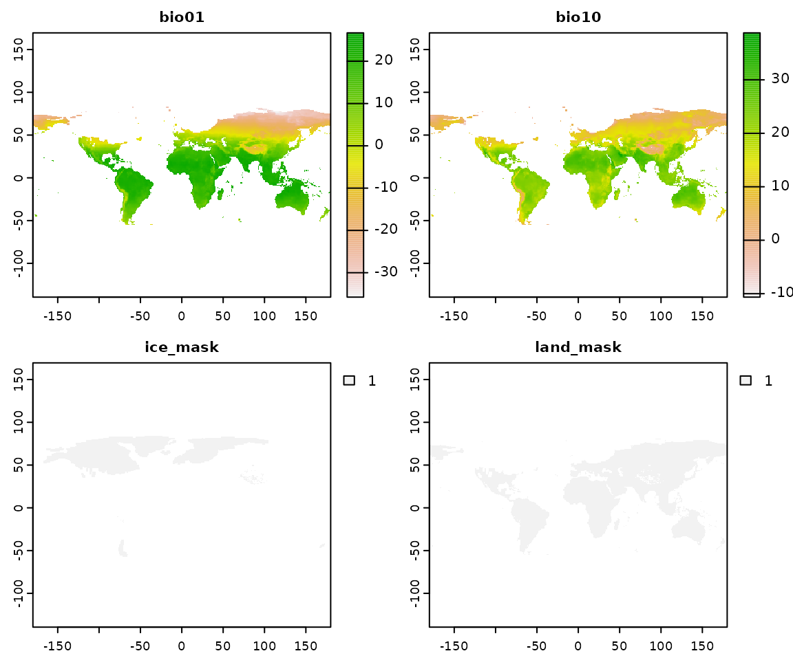
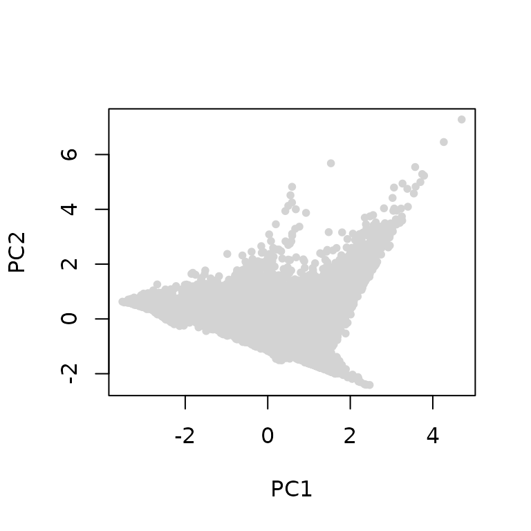
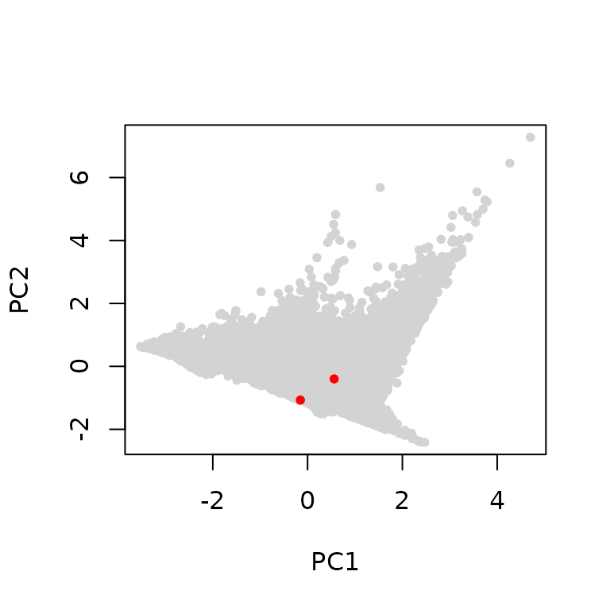
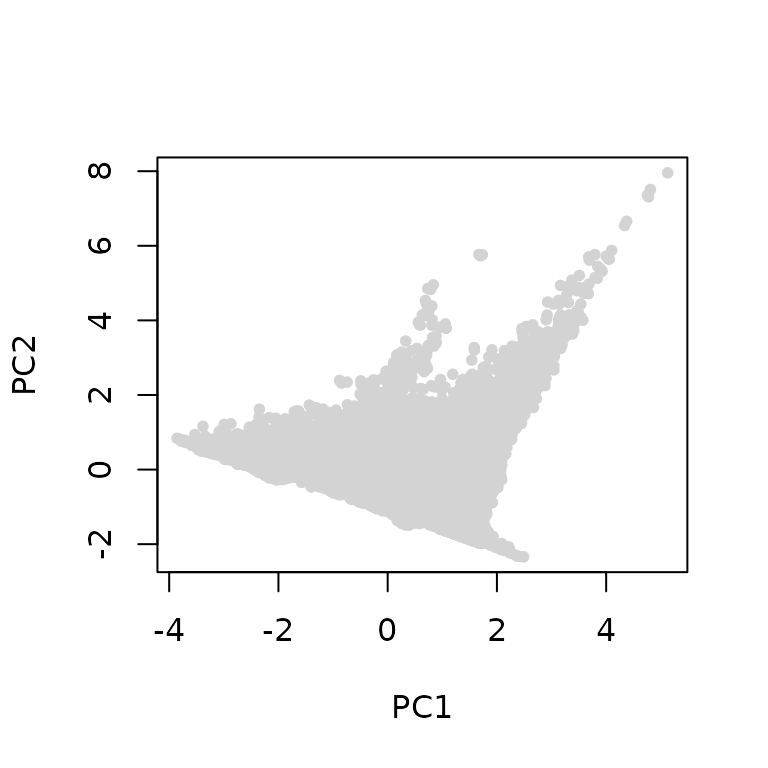

Install the library
You will need to install the library from Github. For this step, you will need to use devtools (if you haven’t done so already, install it from CRAN with install.packages("devtools"). Once you have devtools, simply use:
devtools::install_github("EvolEcolGroup/pastclim")There is a vignette with detailed step by step examples on how to use the library. You can find it on the website for the package. Or, if when can build it when installing pastclim :
devtools::install_github("EvolEcolGroup/pastclim", build_vignettes = TRUE)And read it directly in R with:
vignette("pastclim_overview", package = "pastclim")Depending on the operating system you use, you might need additional packages to build a vignette. —
NOTE: pastclim relies on terra to process rasters. There is a known bug in terra that leads to the occasional message:
"Error in x$.self$finalize() : attempt to apply non-function"being reported. This is an error related to garbage collection, which does not affect the script being correctly executed, so it can be ignored. More discussion of this issue can be found on stackoverflow
Download the data
You will need to download climatic reconstructions before being able to do any work with pastclim. Currently the library contains two datasets: Beyer2020 which covers the last 120k years; and, for project that go further back in time, Krapp2021 which goes back to 800kya. For these two datasets, there are functions that help you download the data and choose the variables. It is possible to add additional, custom datasets, but you will need some familiarity with handling netcdf files (see the vignette on ‘Formatting data to use in pastclim’).
Datasets will stored in the package data path, which can be obtained with:
library(pastclim)
get_data_path()
#> [1] "/home/runner/.local/share/R/pastclim"If you prefer using a custom path (e.g. in “~/my_reconstructions”), it can be set with:
set_data_path(path_to_nc = "~/my_reconstructions")pastclim will remember this new path in the future, even after closing and restarting R.
The package includes a small dataset, Example, that we will use in this vignette; the real datasets are large (from 100s of Mb to a few Gb), and you will need to specify what you want to download (see below).
Let us start by inspecting the Example dataset. We can get a list of variables available for this dataset with:
get_vars_for_dataset(dataset = "Example")
#> [1] "bio01" "bio10" "bio12" "biome"and the available time steps available can be obtained with:
get_time_steps(dataset = "Example")
#> [1] -20000 -15000 -10000 -5000 0For Beyer2020 and Krapp2021, you can get a list of available variables for each dataset with:
get_vars_for_dataset(dataset = "Beyer2020")
#> [1] "bio01" "bio04" "bio05"
#> [4] "bio06" "bio07" "bio08"
#> [7] "bio09" "bio10" "bio11"
#> [10] "bio12" "bio13" "bio14"
#> [13] "bio15" "bio16" "bio17"
#> [16] "bio18" "bio19" "npp"
#> [19] "lai" "biome" "altitude"
#> [22] "rugosity" "temperature_01" "temperature_02"
#> [25] "temperature_03" "temperature_04" "temperature_05"
#> [28] "temperature_06" "temperature_07" "temperature_08"
#> [31] "temperature_09" "temperature_10" "temperature_11"
#> [34] "temperature_12" "precipitation_01" "precipitation_02"
#> [37] "precipitation_03" "precipitation_04" "precipitation_05"
#> [40] "precipitation_06" "precipitation_07" "precipitation_08"
#> [43] "precipitation_09" "precipitation_10" "precipitation_11"
#> [46] "precipitation_12" "cloudiness_01" "cloudiness_02"
#> [49] "cloudiness_03" "cloudiness_04" "cloudiness_05"
#> [52] "cloudiness_06" "cloudiness_07" "cloudiness_08"
#> [55] "cloudiness_09" "cloudiness_10" "cloudiness_11"
#> [58] "cloudiness_12" "relative_humidity_01" "relative_humidity_02"
#> [61] "relative_humidity_03" "relative_humidity_04" "relative_humidity_05"
#> [64] "relative_humidity_06" "relative_humidity_07" "relative_humidity_08"
#> [67] "relative_humidity_09" "relative_humidity_10" "relative_humidity_11"
#> [70] "relative_humidity_12" "wind_speed_01" "wind_speed_02"
#> [73] "wind_speed_03" "wind_speed_04" "wind_speed_05"
#> [76] "wind_speed_06" "wind_speed_07" "wind_speed_08"
#> [79] "wind_speed_09" "wind_speed_10" "wind_speed_11"
#> [82] "wind_speed_12" "mo_npp_01" "mo_npp_02"
#> [85] "mo_npp_03" "mo_npp_04" "mo_npp_05"
#> [88] "mo_npp_06" "mo_npp_07" "mo_npp_08"
#> [91] "mo_npp_09" "mo_npp_10" "mo_npp_11"
#> [94] "mo_npp_12"and
get_vars_for_dataset(dataset = "Krapp2021")
#> [1] "bio01" "bio04" "bio05" "bio06"
#> [5] "bio07" "bio08" "bio09" "bio10"
#> [9] "bio11" "bio12" "bio13" "bio14"
#> [13] "bio15" "bio16" "bio17" "bio18"
#> [17] "bio19" "npp" "biome" "altitude"
#> [21] "rugosity" "temperature_01" "temperature_02" "temperature_03"
#> [25] "temperature_04" "temperature_05" "temperature_06" "temperature_07"
#> [29] "temperature_08" "temperature_09" "temperature_10" "temperature_11"
#> [33] "temperature_12" "precipitation_01" "precipitation_02" "precipitation_03"
#> [37] "precipitation_04" "precipitation_05" "precipitation_06" "precipitation_07"
#> [41] "precipitation_08" "precipitation_09" "precipitation_10" "precipitation_11"
#> [45] "precipitation_12" "mo_npp_01" "mo_npp_02" "mo_npp_03"
#> [49] "mo_npp_04" "mo_npp_05" "mo_npp_06" "mo_npp_07"
#> [53] "mo_npp_08" "mo_npp_09" "mo_npp_10" "mo_npp_11"
#> [57] "mo_npp_12" "cloudiness_01" "cloudiness_02" "cloudiness_03"
#> [61] "cloudiness_04" "cloudiness_05" "cloudiness_06" "cloudiness_07"
#> [65] "cloudiness_08" "cloudiness_09" "cloudiness_10" "cloudiness_11"
#> [69] "cloudiness_12"You will not be able to get the available time steps until you download the data. pastclim offers an interface to download the necessary files into your data path.
To inspect which datasets and variables have already been downloaded in the data path, we can use:
get_downloaded_datasets()
#> $Example
#> [1] "bio01" "bio10" "bio12" "biome"Let’s now download bio01 and bio05 for the Beyer2020 dataset (this operation might take several minutes, as the datasets are large; R will pause until the download is complete):
download_dataset(dataset = "Beyer2020", bio_variables = c("bio01", "bio05"))Note that multiple variables are packed together into a single file, so the command might list more variables than the ones that we downloaded originally.
We have found that on some installations of R (mostly on macOS), the default data path chosen by R can lead to an error when downloading datasets (this is due to incorrect writing permission for that path). If you get an error when downloading data stating “Failed to open file …”, set the path with set_data_path to a directory in your user area, and the error should disappear when you issue again the download_dataset command.
Get climate for locations
Often we want to get the climate for specific locations. We can do so by using the function location_slice. With this function, we will get slices of climate for the times relevant to the locations of interest.
Let us create some fictitious locations:
locations <- data.frame(
longitude = c(0, 90, -120, -9), latitude = c(20, 45, 60, 37),
time_bp = c(0, -9753, -18738, -11849)
)
locations
#> longitude latitude time_bp
#> 1 0 20 0
#> 2 90 45 -9753
#> 3 -120 60 -18738
#> 4 -9 37 -11849And extract their climatic conditions for bio01 and bio12:
location_slice(
x = locations[, c("longitude", "latitude")],
time_bp = locations$time_bp, bio_variables = c("bio01", "bio12"),
dataset = "Example", nn_interpol = FALSE
)
#> longitude latitude time_bp time_bp_slice bio01 bio12
#> 1 0 20 0 0 27.598463 86.26409
#> 2 90 45 -9753 -10000 5.648806 77.20958
#> 3 -120 60 -18738 -20000 NA NA
#> 4 -9 37 -11849 -10000 NA NApastclim finds the closest time steps (slices) available for a given date, and outputs the slice used in column time_bp_slice (the Example dataset that we use in this vignette has a temporal resolution of only 5k years).
Note that the last two locations, for the appropriate time steps, are not available (either under water or ice), and so pastclim does not return a climate reconstruction. In some instances, this is due to the discretisation of space in the raster. We can interpolate climate among the nearest neighbours, thus using climate reconstructions for neighbouring pixels if the location is just off one or more land pixels:
location_slice(
x = locations[, c("longitude", "latitude")],
time_bp = locations$time_bp, bio_variables = c("bio01", "bio12"),
dataset = "Example", nn_interpol = TRUE
)
#> longitude latitude time_bp time_bp_slice bio01 bio12
#> 1 0 20 0 0 27.598463 86.26409
#> 2 90 45 -9753 -10000 5.648806 77.20958
#> 3 -120 60 -18738 -20000 NA NA
#> 4 -9 37 -11849 -10000 15.843223 645.35519In this case, the last location is indeed just off the coast, and so we can reconstruct some appropriate climate by interpolating. Note that nn_interpol = TRUE is the default for this function.
Sometimes, we want to get a time series of climatic reconstructions, thus allowing us to see how climate changed over time:
locations_ts <- location_series(
x = locations[, c("longitude", "latitude")],
bio_variables = c("bio01", "bio12"),
dataset = "Example"
)The resulting dataframe can be subsetted to get the time series for each location (the small Example dataset only contains 5 time points):
subset(locations_ts, id == 1)
#> longitude latitude id time bio01 bio12
#> 1 0 20 1 -20000 22.44057 102.66345
#> 1.1 0 20 1 -15000 23.64338 147.15260
#> 1.2 0 20 1 -10000 25.56035 171.84576
#> 1.3 0 20 1 -5000 26.28267 139.80730
#> 1.4 0 20 1 0 27.59846 86.26409Also note that for some locations, climate can be available only for certain time steps, depending on sea level and ice sheet extent. This is the case for location 3:
subset(locations_ts, id == 3)
#> longitude latitude id time bio01 bio12
#> 3 -120 60 3 -20000 NaN NaN
#> 3.1 -120 60 3 -15000 NaN NaN
#> 3.2 -120 60 3 -10000 -3.707212 321.1735
#> 3.3 -120 60 3 -5000 -3.246998 386.2584
#> 3.4 -120 60 3 0 -3.118226 336.2031Get climate for a region
Instead of focussing on specific locations, we might want to look a whole region. For a given time step, we can extract a slice of climate with
climate_20k <- region_slice(
time_bp = -20000,
c("bio01", "bio10", "bio12"),
dataset = "Example"
)This returns a raster (technically a spatRaster object as defined in the terra library, meaning that we can perform all standard terra raster operations on this object). To interact with spatRaster objects, it is best to load the terra library; we can then get a summary of this object:
library(terra)
#> terra 1.6.7
climate_20k
#> class : SpatRaster
#> dimensions : 150, 360, 3 (nrow, ncol, nlyr)
#> resolution : 1, 1 (x, y)
#> extent : -180, 180, -60, 90 (xmin, xmax, ymin, ymax)
#> coord. ref. : lon/lat WGS 84
#> sources : example_climate.nc:BIO1
#> example_climate.nc:BIO10
#> example_climate.nc:BIO12
#> varnames : bio01 (Annual Mean Temperature)
#> bio10 (Mean Temperature of Warmest Quarter)
#> bio12 (Annual Precipitation)
#> names : bio01, bio10, bio12
#> time (raw) : -20000and plot these three variables (the layers of the raster):

Often we want to focus a given region. There are a number of preset extents in pastclim:
region_extent
#> $Africa
#> [1] -19 61 -36 38
#>
#> $America
#> [1] -180 -15 -70 90
#>
#> $Asia
#> [1] 60 180 5 85
#>
#> $Europe
#> [1] -15 70 33 75
#>
#> $Eurasia
#> [1] -15 180 33 85
#>
#> $N_America
#> [1] -180 -15 15 90
#>
#> $Oceania
#> [1] 110 180 -50 10
#>
#> $S_America
#> [1] -125 -31 58 35We can extract climate only for Europe; we need to pass an terra::SpatExtent object to region_slice:
europe_climate_20k <- region_slice(
time_bp = -20000,
c("bio01", "bio10", "bio12"),
dataset = "Example",
ext = terra::ext(region_extent$Europe)
)
terra::plot(europe_climate_20k,
main = names(europe_climate_20k))
Alternatively, we can crop an already extracted raster:
europe_climate_20k_alt <- terra::crop(climate_20k, terra::ext(region_extent$Europe))
terra::plot(europe_climate_20k_alt,
main = names(europe_climate_20k_alt))
We might want to use a more complex shape (i.e. a polygon, as a terra::vect object) as a mask to limit the area covered by the raster. For example, we might want to focus the 3 continents Africa, Europe and Asia, but exclude the Americas and Oceania. We need to create a polygon with the appropriate vertices (note that you need to reuse the first vertex as the last vertex, to close the polygon).
afr_eurasia_vec <- terra::vect("POLYGON ((0 70, 25 70, 50 80, 170 80, 170 10,
119 2.4, 119 0.8, 116 -7.6, 114 -12, 100 -40,
-25 -40, -25 64, 0 70))")
climate_20k_afr_eurasia <- region_slice(
time_bp = -20000,
c("bio01", "bio10", "bio12"),
dataset = "Example",
crop = afr_eurasia_vec)
terra::plot(climate_20k_afr_eurasia,
main = names(climate_20k_afr_eurasia))
pastclim includes a number of pre-generated masks for the main continental masses, stored in the dataset continent_outlines in an sf object. Note that outlines that cross the antimeridian are split into multiple polygons (so that they can be used without projecting the rasters). continent_outlines_union provides the same outlines as single polygons (in case you want to use a projection). We can build the outline for Africa and Eurasia by unioning the two individual outlines:
library(sf)
#> Linking to GEOS 3.8.0, GDAL 3.0.4, PROJ 6.3.1; sf_use_s2() is TRUE
africa_outline <- subset(region_outline, region_outline$name == "Africa")
eurasia_outline <- subset(region_outline, region_outline$name == "Eurasia")
afr_eurasia_vec <- terra::vect(sf::st_union(africa_outline, eurasia_outline))
#> Warning: attribute variables are assumed to be spatially constant throughout all
#> geometries
climate_20k_afr_eurasia <- region_slice(
time_bp = -20000,
c("bio01", "bio10", "bio12"),
dataset = "Example",
crop = afr_eurasia_vec)
terra::plot(climate_20k_afr_eurasia,
main = names(climate_20k_afr_eurasia))
Note that the Eurasian outline is intersected by the antimeridian, and so we have a small amount of data on the left hand side of the plot (corresponding to the eastern end of Siberia).
It is possible to also load a time series of rasters with the function region_series. In this case, the function returns a spatRasterDataset, with each variable as a sub-dataset:
climate_region <- region_series(
time_bp = list(min=-15000,max=0), c("bio01", "bio10", "bio12"),
"Example"
)
climate_region
#> class : SpatRasterDataset
#> subdatasets : 3
#> dimensions : 150, 360 (nrow, ncol)
#> nlyr : 4, 4, 4
#> resolution : 1, 1 (x, y)
#> extent : -180, 180, -60, 90 (xmin, xmax, ymin, ymax)
#> coord. ref. : lon/lat WGS 84
#> source(s) : example_climate.nc
#> names : bio01, bio10, bio12Each of these sub-dataset is a spatRaster, with time steps as layers:
climate_region$bio01
#> class : SpatRaster
#> dimensions : 150, 360, 4 (nrow, ncol, nlyr)
#> resolution : 1, 1 (x, y)
#> extent : -180, 180, -60, 90 (xmin, xmax, ymin, ymax)
#> coord. ref. : lon/lat WGS 84
#> source : example_climate.nc:BIO1
#> varname : bio01 (Annual Mean Temperature)
#> names : bio01_-15000, bio01_-10000, bio01_-5000, bio01_0
#> time (raw) : -15000 to 0We can then plot the time series of a given variable:
terra::plot(climate_region$bio01)
To plot all climate variables for a given time step, we can slice the time series:
slice_10k <- slice_region_series(climate_region, time_bp = -10000)
terra::plot(slice_10k, main = names(slice_10k))
region_series takes the same ext and crop options as region_slice to limit the extent of the climatic reconstrutions.
Working with biomes and ice sheets
The climate reconstructions do not show areas under permanent ice. Ice sheets are stored as class 28 in the “biome” variable:
get_biome_classes("Example")
#> id category
#> 1 0 Water bodies
#> 2 1 Tropical evergreen forest
#> 3 2 Tropical semi-deciduous forest
#> 4 3 Tropical deciduous forest/woodland
#> 5 4 Temperate deciduous forest
#> 6 5 Temperate conifer forest
#> 7 6 Warm mixed forest
#> 8 7 Cool mixed forest
#> 9 8 Cool conifer forest
#> 10 9 Cold mixed forest
#> 11 10 Evegreen taiga/montane forest
#> 12 11 Deciduous taiga/montane forest
#> 13 12 Tropical savanna
#> 14 13 Tropical xerophytic shrubland
#> 15 14 Temperate xerophytic shrubland
#> 16 15 Temperate sclerophyll woodland
#> 17 16 Temperate broadleaved savanna
#> 18 17 Open conifer woodland
#> 19 18 Boreal parkland
#> 20 19 Tropical grassland
#> 21 20 Temperate grassland
#> 22 21 Desert
#> 23 22 Steppe tundra
#> 24 23 Shrub tundra
#> 25 24 Dwarf shrub tundra
#> 26 25 Prostrate shrub tundra
#> 27 26 Cushion forb lichen moss tundra
#> 28 27 Barren
#> 29 28 Land iceTo plot it, we extract the biome and then subset it to just that class
climate_20k <- region_slice(
time_bp = -20000,
bio_variables = c("bio01", "bio10", "biome"),
dataset = "Example"
)
climate_20k$ice <- climate_20k$biome
climate_20k$ice[climate_20k$ice != 28] <- FALSE
climate_20k$ice[climate_20k$ice == 28] <- TRUE
terra::plot(climate_20k, main = names(climate_20k))
Or more simply, we use functions designed to get ice and land masks.
climate_20k <- region_slice(
time_bp = -20000,
c("bio01", "bio10"),
dataset = "Example"
)
climate_20k$ice_mask <- get_ice_mask(-20000, dataset = "Example")
climate_20k$land_mask <- get_land_mask(-20000, dataset = "Example")
terra::plot(climate_20k, main = names(climate_20k))
Set the samples within the background
We can visualise the environment for this time step with a PCA:
climate_10k <- region_slice(-10000,
c("bio01", "bio10", "bio12"),
dataset = "Example"
)
climate_values_10k <- values(climate_10k)
climate_values_10k <- climate_values_10k[!is.nan(climate_values_10k[, 1]), ]
climate_10k_pca <- prcomp(climate_values_10k, scale = TRUE, center = TRUE)
plot(climate_10k_pca$x[, 2] ~ climate_10k_pca$x[, 1],
pch = 20, col = "lightgray",
xlab = "PC1", ylab = "PC2"
)
We can now get the climate variables for the locations at this time step, compute the PCA scores and plots the locations on top of the background climate:
locations_10k <- location_slice(
x = locations[, c("longitude", "latitude")],
time_bp = locations$time_bp, bio_variables = c("bio01", "bio12"),
dataset = "Example"
)
locations_10k <- locations_10k[locations_10k$time_bp_slice == -10000, ]
locations_10k_climate <- location_slice(
x = locations_10k[, c("longitude", "latitude")],
time_bp = locations_10k$time_bp, bio_variables = c("bio01", "bio10", "bio12"),
dataset = "Example"
)
locations_10k_pca_scores <- predict(climate_10k_pca, newdata = locations_10k_climate[, -c(1:4)])
plot(climate_10k_pca$x[, 2] ~ climate_10k_pca$x[, 1],
pch = 20, col = "lightgray",
xlab = "PC1", ylab = "PC2"
)
points(locations_10k_pca_scores, pch = 20, col = "red")
Working with MIS
Sometimes we want to work with multiple time steps to represent a given MIS. We can get a list of time steps available for a given mis with:
mis_time_steps <- get_mis_time_steps(1, "Example")
mis_time_steps
#> [1] -10000 -5000 0And now cycle over those steps. First extract the climate into a list:
mis_climate_list <- list()
for (this_step in mis_time_steps) {
this_step_climate <-
region_slice(
time_bp = this_step,
bio_variables = c("bio01", "bio10", "bio12"),
dataset = "Example"
)
this_step_climate <- values(this_step_climate)
# remove NAs
this_step_climate <-
this_step_climate[!is.nan(this_step_climate[, 1]), ]
mis_climate_list[[as.character(this_step)]] <- this_step_climate
}Then combine them into a single matrix:
mis_climate <- do.call(rbind, mis_climate_list)And finally plot it:
mis_pca <- prcomp(mis_climate, scale = TRUE, center = TRUE)
plot(mis_pca$x[, 2] ~ mis_pca$x[, 1],
pch = 20, col = "lightgray",
xlab = "PC1", ylab = "PC2"
)
Random sampling of background
NOTE: there is a bug in terra 1.6.17 that prevents this section from working; you will get a “negative probability” error when sampling if you use that version.
For a number of species distribution models, we need to subsample background points to our presences. If we are interested in a single time step, we can simple generate the raster for the time slice of interest, and use sample_region_slice:
climate_20k <- region_slice(
time_bp = -20000,
bio_variables = c("bio01", "bio10"),
dataset = "Example"
)
this_sample <- sample_region_slice(climate_20k, size = 100)
head(this_sample)
#> cell x y bio01 bio10
#> 1 14954 13.5 48.5 0.8084163 10.02328
#> 2 11407 66.5 58.5 -9.9745779 12.81296
#> 3 22501 0.5 27.5 19.3944244 29.05527
#> 4 22856 -4.5 26.5 20.0186481 28.42356
#> 5 19738 117.5 35.5 9.0533886 22.96060
#> 6 24743 82.5 21.5 23.3264236 29.29441If we needed to get other variables for those coordinates, we could simply:
additional_var <- location_slice(
x = data.frame(longitude = this_sample$x, latitude = this_sample$y),
time_bp = rep(-20000, nrow(this_sample)),
bio_variables = c("bio12"),
dataset = "Example"
)
head(additional_var)
#> longitude latitude time_bp time_bp_slice bio12
#> 1 13.5 48.5 -20000 -20000 670.82288
#> 2 66.5 58.5 -20000 -20000 272.53018
#> 3 0.5 27.5 -20000 -20000 11.32761
#> 4 -4.5 26.5 -20000 -20000 23.90315
#> 5 117.5 35.5 -20000 -20000 397.41644
#> 6 82.5 21.5 -20000 -20000 902.86743Alternatively, we could use the cell number:
additional_var <- location_slice(
x = this_sample$cell,
time_bp = rep(-20000, nrow(this_sample)),
bio_variables = c("bio12"),
dataset = "Example"
)
head(additional_var)
#> cell_number time_bp time_bp_slice bio12
#> 1 14954 -20000 -20000 670.82288
#> 2 11407 -20000 -20000 272.53018
#> 3 22501 -20000 -20000 11.32761
#> 4 22856 -20000 -20000 23.90315
#> 5 19738 -20000 -20000 397.41644
#> 6 24743 -20000 -20000 902.86743We can also sample the background for multiple time steps (e.g. if we want to match the background to the number of samples based on their radiocarbon dates). So, for example, if we wanted 3 samples from 20k years ago and 5 samples from 10k years ago:
climate_ts <- region_series(
time_bp = c(-20000,-10000),
c("bio01", "bio10", "bio12"),
dataset = "Example",
ext = terra::ext(region_extent$Europe)
)
sampled_climate <- sample_region_series(climate_ts, size = c(3,5))
sampled_climate
#> cell x y bio01 bio10 bio12 time_bp
#> -20000.1 3374 43.5 35.5 17.017353 27.88568 268.29761 -20000
#> -20000.2 3556 55.5 33.5 15.644857 25.59466 68.47096 -20000
#> -20000.3 2963 57.5 40.5 8.889895 20.36036 97.48357 -20000
#> -10000.1 3134 58.5 38.5 14.942838 31.61710 155.89046 -10000
#> -10000.2 2864 43.5 41.5 2.272758 18.18176 660.12994 -10000
#> -10000.3 2197 56.5 49.5 3.067279 24.65434 234.81911 -10000
#> -10000.4 2456 60.5 46.5 5.563390 27.51768 100.58378 -10000
#> -10000.5 1881 -4.5 52.5 8.183455 14.04215 1739.80518 -10000